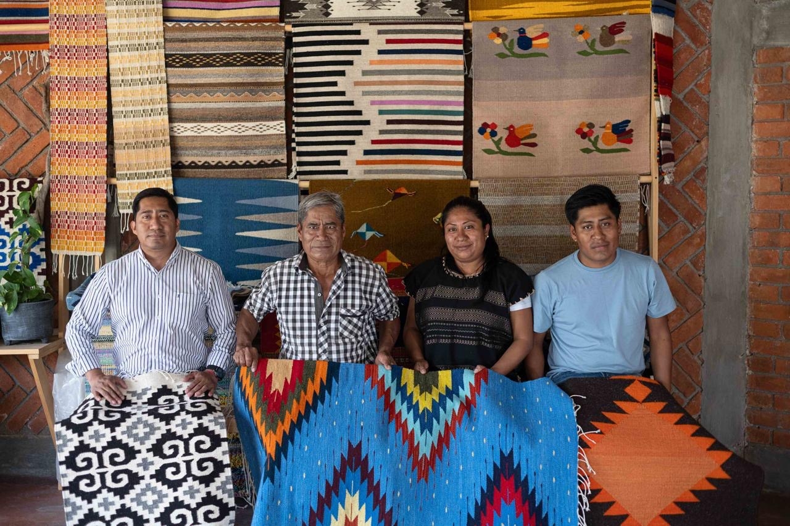
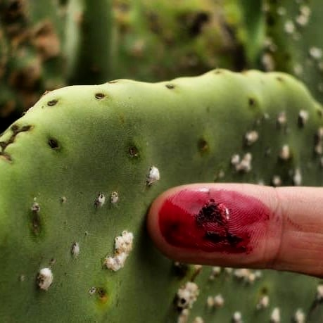
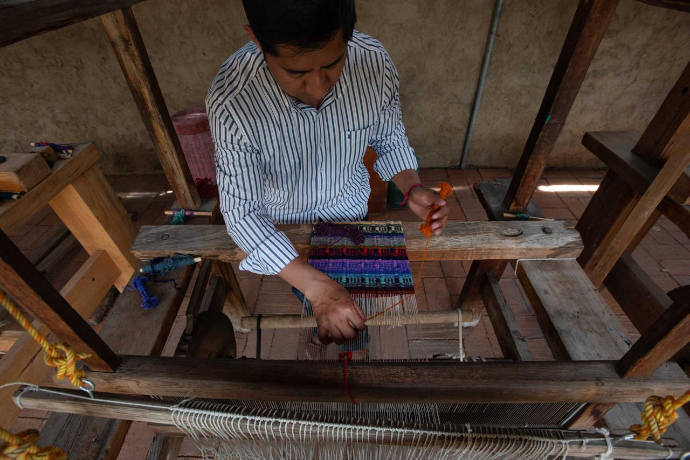
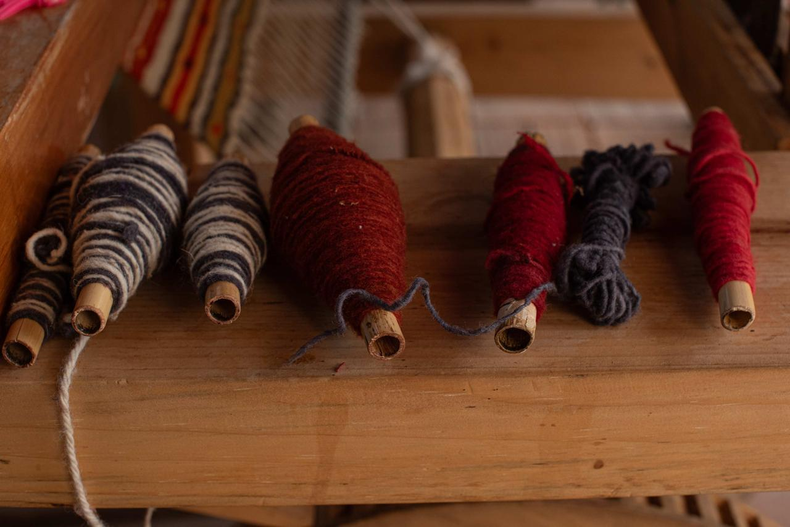
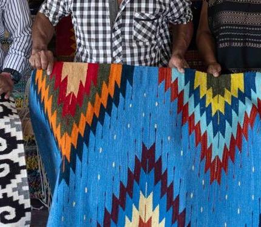
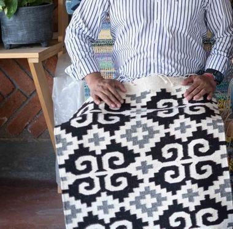

Teotitlán del Valle · Sierra Juárez · Oaxaca · 2,500 años de tradición
Teotitlán del Valle · Sierra Juárez · Oaxaca · 2,500 years of tradition
Cada tapete de Teotitlán lleva décadas de conocimiento zapoteca en cada cruce de lana. No es decoración. Es memoria viva.
Every Teotitlán rug carries decades of Zapotec knowledge in each wool crossing. It's not decoration. It's living memory.
00 — La Familia
00 — The Family

Escaneaste el QR de un tapete tejido por esta familia en Teotitlán del Valle, Oaxaca. No es una fábrica ni una tienda genérica — es el trabajo de manos que conoces por su nombre, que puedes volver a contactar cuando quieras.
You scanned the QR code of a rug woven by this family in Teotitlán del Valle, Oaxaca. It's not a factory or a generic shop — it's the work of hands you can put a name to, and reach again whenever you want.
Cada pieza que ves aquí colgada detrás de ellos salió del mismo telar, con el mismo cuidado. Si te gustó tu tapete — o quieres uno nuevo, en otro tamaño o color — este es el lugar para encontrarlos.
Every piece hanging behind them came off that same loom, with the same care. If you loved your rug — or want a new one, in another size or color — this is the place to find them again.
Contactar a la familia Contact the family01 — Historia
01 — History
Teotitlán del Valle — cuyo nombre zapoteco es Xigie, "bajo la piedra" — fue la primera ciudad fundada por los zapotecos en 1465, según Fray Francisco de Burgoa. Su tradición textil no empezó con los españoles: empezó milenios antes, cuando las mujeres tejían en telares de cintura fibras del maguey y el algodón silvestre.
Teotitlán del Valle — whose Zapotec name is Xigie, "under the stone" — was the first city founded by the Zapotecs in 1465, according to Fray Francisco de Burgoa. Its textile tradition didn't start with the Spanish: it began millennia before, when women wove maguey fibers and wild cotton on backstrap looms.
Hoy, en un pueblo de 6,000 habitantes, casi cada familia teje. No es una atracción turística — es la economía, la identidad, el lenguaje visual de una cultura que sobrevivió la conquista y la industrialización manteniéndose fiel a sus raíces.
Today, in a town of 6,000 inhabitants, almost every family weaves. It's not a tourist attraction — it's the economy, the identity, the visual language of a culture that survived conquest and industrialization by staying true to its roots.
Las mujeres zapotecas tejían en telares de cintura con fibras de maguey, ixtle y algodón silvestre. Los diseños geométricos que hoy vemos en los tapetes — las grecas de Mitla — son los mismos de hace dos mil años. No evolucionaron. Se preservaron.
Zapotec women wove on backstrap looms using maguey, ixtle, and wild cotton fibers. The geometric designs we see in today's rugs — the Mitla step-fret patterns — are the same ones from two thousand years ago. They didn't evolve. They were preserved.
Los frailes franciscanos introducen el telar de pedal colonial — más rápido, capaz de producir piezas más grandes. Lo que no anticiparon: los artesanos zapotecos lo adoptaron pero lo dominaron a su manera, usando sus propios diseños, sus propios tintes, su propia cosmología. La herramienta fue europea. El resultado fue puramente zapoteca.
Franciscan friars introduce the colonial pedal loom — faster, capable of producing larger pieces. What they didn't anticipate: Zapotec artisans adopted it but mastered it their own way, using their own designs, their own dyes, their own cosmology. The tool was European. The result was purely Zapotec.
Los colorantes de anilina industriales llegan masivamente: más baratos, más brillantes, más rápidos. Muchos artesanos los adoptan para competir en precio con tapetes importados de Asia. La grana cochinilla, el añil, el caracol marino — el conocimiento de siglos — casi se pierde en una generación. Fue el punto más oscuro del textil teotiteco.
Industrial aniline dyes arrive en masse: cheaper, brighter, faster. Many artisans adopt them to compete in price with rugs imported from Asia. Cochineal, indigo, sea snail — centuries of knowledge — nearly lost in one generation. It was the darkest point in Teotitlán textile history.
Familias como los Gutiérrez, Fe y Lola e Isaac Vásquez lideran el retorno a los tintes ancestrales. No como nostalgia — como posicionamiento: el tapete con tintes naturales cuesta 2 a 3 veces más porque vale 2 a 3 veces más. Hoy, los mejores tapetes de Teotitlán se venden en galerías de Nueva York, París y Tokio.
Families like the Gutiérrez, Fe y Lola, and Isaac Vásquez lead the return to ancestral dyes. Not as nostalgia — as positioning: natural-dye rugs cost 2 to 3 times more because they are worth 2 to 3 times more. Today, the finest Teotitlán rugs sell in galleries in New York, Paris, and Tokyo.
02 — Tintes Naturales
02 — Natural Dyes
Los tintes naturales son lo que hizo famoso a Teotitlán. El proceso es lento, estacional y caro — pero los colores están vivos y envejecen con una dignidad que ningún colorante sintético puede replicar. Un tapete con tinte natural de veinte años luce mejor que el día en que salió del telar.
Natural dyes are what made Teotitlán famous. The process is slow, seasonal and expensive — but the colors are alive and age with a dignity no synthetic dye can replicate. A natural-dye rug from twenty years ago looks better than the day it left the loom.

Grana Cochinilla (Dactylopius coccus)
Cochineal (Dactylopius coccus)
Un insecto que vive en el nopal. Se recolecta a mano, se seca y se muele. Con limón da rojo vivo; con bicarbonato da púrpura; con alumbre fija el color en la lana. Es el tinte más valioso de Mesoamérica — por él los españoles conquistaron rutas comerciales.
An insect living on cactus. Hand-harvested, dried, and ground. With lemon it gives bright red; with baking soda, purple; with alum it fixes color in wool. It was Mesoamerica's most valuable dye — Spanish trade routes were built around it.
Añil / Jiuquilitl (Indigofera suffruticosa)
Indigo / Jiuquilitl
Planta nativa de Oaxaca, conocida localmente como jiuquilitl. Las hojas fermentan en agua para liberar el pigmento azul. El proceso requiere días de trabajo y conocimiento preciso de temperatura y oxidación. El azul índigo natural tiene una profundidad que el sintético nunca alcanza.
Native Oaxacan plant, known locally as jiuquilitl. Leaves ferment in water to release blue pigment. The process requires days of work and precise knowledge of temperature and oxidation. Natural indigo blue has a depth synthetic versions never reach.
Cempasúchil · Musgo de Roca · Pericón
Marigold · Rock Moss · Wild Tarragon
La flor de cempasúchil hervida da amarillos intensos. El musgo de las rocas produce un amarillo ocre más apagado. La cantidad y el tiempo de cocción determinan el tono final — dos artesanos con la misma planta nunca producen exactamente el mismo amarillo.
Boiled marigold gives intense yellows. Rock moss produces a more muted ochre. The quantity and cooking time determine the final tone — two artisans with the same plant never produce exactly the same yellow.
Cáscara de Nuez · Palo de Rosa · Huizache
Pecan Shell · Rosewood · Huizache
La cáscara de nuez da tonos cafés cálidos. La vaina de huizache hervida con sal produce negros profundos. Son los tintes más comunes porque sus materiales están disponibles en la sierra todo el año.
Pecan shell gives warm brown tones. Huizache pods boiled with salt produce deep blacks. These are the most common dyes because their materials are available in the highlands year-round.
Caracol Marino (Tishinda / Purpura pansa)
Sea Snail (Tishinda / Purpura pansa)
El tinte más raro y costoso. El caracol marino de la costa oaxaqueña secreta un líquido que al oxidarse produce un púrpura único. Los artesanos van a la costa a "ordeñar" los caracoles — sin matarlos — y tiñen el hilo directamente. Una pieza con tinte de caracol marino es excepcionalmente valiosa.
The rarest and most expensive dye. The Oaxacan coastal sea snail secretes a liquid that upon oxidation produces a unique purple. Artisans travel to the coast to "milk" the snails — without killing them — and dye the thread directly. A piece with sea snail dye is exceptionally valuable.
Huizache negro · Lana natural negra
Black Huizache · Natural black wool
Dos métodos: teñir con vaina de huizache negro hervida con sal, o simplemente usar la lana de oveja negra sin teñir. La lana negra natural tiene una textura diferente — más gruesa, más fuerte — que los expertos pueden identificar al tacto.
Two methods: dye with black huizache pods boiled with salt, or simply use undyed black sheep wool. Natural black wool has a different texture — coarser, stronger — that experts can identify by touch.
"Un tapete con tinte natural no envejece. Madura." "A natural-dye rug doesn't age. It matures." — Artesano de Teotitlán del ValleArtisan of Teotitlán del Valle
03 — El Proceso
03 — The Process
Un tapete auténtico de Teotitlán tarda entre 15 días y varios meses en terminarse, dependiendo del tamaño y la complejidad del diseño. No hay atajos en el proceso — cada paso tiene su razón de ser y afecta el resultado final.
An authentic Teotitlán rug takes between 15 days and several months to complete, depending on size and design complexity. There are no shortcuts — each step has its purpose and affects the final result.


Algunas familias crían sus propias ovejas; otras compran la lana en mercados de la Sierra Norte. La lana se lava con jabones naturales para eliminar la grasa y las impurezas del vellón. Un lavado incompleto afecta la absorción del tinte.
Some families raise their own sheep; others buy wool at Sierra Norte markets. Wool is washed with natural soaps to remove lanolin and fleece impurities. Incomplete washing affects dye absorption.
La lana se peina con dos cepillos grandes de madera con clavos de metal — las "cardas". Este proceso alinea las fibras, elimina nudos y suaviza la lana para que se hile con uniformidad. Es un trabajo físicamente exigente que puede tomar horas para la lana de un tapete pequeño.
Wool is combed with two large wooden brushes with metal teeth — the "carders." This process aligns fibers, removes tangles, and softens wool for even spinning. It's physically demanding work that can take hours for even a small rug's worth of wool.
La lana cardada se hila en la rueca para crear hilos uniformes. Entre más torcido esté el hilo, más difícil que se deshaga en el telar. La tensión del hilo es un arte en sí mismo — hilos demasiado gruesos o delgados arruinan el tejido final.
Carded wool is spun on the wheel to create uniform threads. The tighter the twist, the less likely threads will unravel on the loom. Thread tension is an art in itself — threads too thick or thin ruin the final weave.
Las madejas de hilo se sumergen en agua hirviendo con el tinte natural y el mordente (alumbre, jugo de limón o sal según el tinte). El tiempo de cocción, la temperatura y la proporción determinan la intensidad del color. Se puede tardar de un día a una semana solo en esta etapa.
Yarn skeins are submerged in boiling water with natural dye and mordant (alum, lemon juice, or salt depending on the dye). Cooking time, temperature, and proportion determine color intensity. This stage alone can take from one day to a week.
El artesano dispone los hilos de urdimbre (los hilos verticales fijos) en el telar de pedal. Este paso define el ancho y la longitud final del tapete. La urdimbre suele ser de algodón — más resistente — mientras que la trama que crea el diseño es de lana teñida.
The artisan sets up the warp threads (fixed vertical threads) on the pedal loom. This step defines the final width and length of the rug. The warp is usually cotton — more durable — while the weft that creates the design is dyed wool.
El artesano acciona los pedales con los pies para levantar alternadamente los hilos de urdimbre, mientras pasa la lanzadera con el hilo de trama de mano en mano. Requiere coordinación total entre pies, manos y mente — el diseño complejo vive solo en la memoria del artesano, no en un patrón escrito.
The artisan operates the pedals with their feet to alternately raise warp threads, while passing the shuttle with weft thread hand to hand. It requires total coordination between feet, hands, and mind — the complex design lives only in the artisan's memory, not in a written pattern.
Al terminar el tejido, se cortan los hilos sobrantes, se atan los flecos, y el tapete se lava una vez más para fijar los colores y suavizar la lana. Un tapete bien terminado no tiene hilos sueltos visibles por el reverso — revisar el reverso es la primera prueba de calidad.
Once weaving is complete, excess threads are trimmed, fringes tied, and the rug is washed once more to set colors and soften the wool. A well-finished rug has no visible loose threads on the back — checking the back is the first quality test.
04 — Cómo Juzgar
04 — How to Judge
El mercado de tapetes en Oaxaca tiene un problema honesto: la mitad de los "tapetes de Teotitlán" vendidos en mercados turísticos son tapetes industriales importados, tapetes con tintes sintéticos, o piezas producidas en serie que no tienen nada que ver con el proceso artesanal. No es ilegal. Pero sí es un engaño cuando se venden como auténticos.
The rug market in Oaxaca has an honest problem: half the "Teotitlán rugs" sold in tourist markets are imported industrial rugs, synthetic-dye rugs, or mass-produced pieces with nothing to do with the artisanal process. It's not illegal. But it is deceptive when sold as authentic.
Si compras un tapete industrial de $800 pesos sabiendo lo que es — perfecto. Pero si pagas $3,000 creyendo que compras artesanía auténtica de un maestro tejedor y no es así — te engañaron. Este es el mismo problema del mezcal industrial vendido como artesanal.
If you buy an $800-peso industrial rug knowing what it is — fine. But if you pay $3,000 believing you're buying authentic craftsmanship from a master weaver and that's not true — you were deceived. This is the exact same problem as industrial mezcal sold as artisanal.
"Si me preguntas de dónde viene la cochinilla, te llevo al nopal donde la recolecté. Si no pueden hacer eso — ese no es mi tapete." "If you ask me where the cochineal comes from, I'll take you to the cactus where I collected it. If they can't do that — that is not my rug." — Maestro Tejedor, Teotitlán del ValleMaster Weaver, Teotitlán del Valle
05 — Símbolos
05 — Symbols
Los diseños en los tapetes de Teotitlán no son decorativos en el sentido vacío de la palabra. Cada símbolo viene de siglos de historia zapoteca — de Mitla, de Monte Albán, de la relación entre el pueblo y el cosmos. Cuando compras un tapete con grecas zapotecas, compras dos mil años de significado.
The designs in Teotitlán rugs are not decorative in the empty sense of the word. Each symbol comes from centuries of Zapotec history — from Mitla, from Monte Albán, from the relationship between the people and the cosmos. When you buy a rug with Zapotec step-frets, you buy two thousand years of meaning.
El símbolo más icónico. Directamente de los muros de Mitla. Las cuatro líneas ascendentes representan el ciclo de la vida: nacimiento, juventud, adultez y vejez. La línea más larga es la sabiduría acumulada.
The most iconic symbol. Directly from the walls of Mitla. Four ascending lines represent life's cycle: birth, youth, adulthood, and old age. The longest line represents accumulated wisdom.
Representa Monte Albán — la capital zapoteca durante 1,300 años, centro de poder político, económico y espiritual de la civilización zapoteca. La pirámide en un tapete es una declaración de identidad cultural.
Represents Monte Albán — the Zapotec capital for 1,300 years, the political, economic, and spiritual center of Zapotec civilization. A pyramid in a rug is a statement of cultural identity.
Símbolo de Cocijo, el dios zapoteco de la lluvia y la fertilidad. El rayo en zigzag era esencial para el ciclo del maíz — la base de la vida mesoamericana. Aparece en casi todos los tapetes ceremoniales.
Symbol of Cocijo, the Zapotec god of rain and fertility. The zigzag lightning was essential to the corn cycle — the foundation of Mesoamerican life. It appears in almost all ceremonial rugs.
Protección y la capacidad de "ver lo invisible". Se coloca frecuentemente en el centro del tapete como escudo espiritual. El diamante central representa el punto donde el mundo visible y el espiritual se encuentran.
Protection and the ability to "see the unseen." Frequently placed at the rug's center as a spiritual shield. The central diamond represents the point where the visible and spiritual worlds meet.
El símbolo más sagrado de Mesoamérica: las raíces en el inframundo, el tallo en la tierra, el polen alcanzando el cielo. El ciclo completo de la vida y la sustancia. Un tapete con maíz es una ofrenda.
The most sacred Mesoamerican symbol: roots in the underworld, stalk on earth, pollen reaching the sky. The complete cycle of life and sustenance. A rug with corn is an offering.
Águilas, jaguares, serpientes, venados — cada animal tiene su significado en la cosmología zapoteca. El jaguar es poder y oscuridad; el águila es visión y libertad; la serpiente emplumada conecta tierra y cielo.
Eagles, jaguars, serpents, deer — each animal carries meaning in Zapotec cosmology. The jaguar is power and darkness; the eagle is vision and freedom; the feathered serpent connects earth and sky.
07 — Galería
07 — Gallery
Imágenes del proceso real — desde el cardado de la lana hasta el tapete terminado.
Images of the real process — from wool carding to the finished rug.
08 — Tienda
08 — Shop
Trabajamos por encargo directo con el artesano. Sin intermediarios, sin precios inflados. El precio varía según tamaño, complejidad del diseño y tipo de tinte. Consulta sin compromiso.
We work by direct commission with the artisan. No intermediaries, no inflated prices. Price varies by size, design complexity and dye type. Inquire with no obligation.

Tintes Naturales · Cochinilla + Añil
Natural Dyes · Cochineal + Indigo
Diseño clásico de Teotitlán con greca de Mitla y diamante central. Tintes 100% naturales. Reversible — mismo diseño en ambos lados.
Classic Teotitlán design with Mitla step-fret and central diamond. 100% natural dyes. Reversible — same design on both sides.

Lana Natural · Blanco y Negro
Natural Wool · Black and White
Greca clásica tejida con lana natural blanca y negra, sin tintes — la textura y el contraste vienen directo del vellón. Pieza de colección.
Classic step-fret woven in natural black and white wool, no dyes — texture and contrast come straight from the fleece. Collector's piece.
Encargo Especial · Diseño a la medida
Special Commission · Custom Design
¿Tienes un diseño en mente? Tú eliges el tamaño, los colores, los símbolos. El artesano lo teje. Tiempo de elaboración: 1 a 3 meses.
Have a design in mind? You choose the size, colors, symbols. The artisan weaves it. Production time: 1 to 3 months.
06 — Contacto
06 — Contact
Trabajamos directamente con artesanos de Teotitlán del Valle. Cada pieza es encargo directo — diseño, tamaño, tintes a tu elección. Sin intermediarios. Sin precios inflados. El artesano recibe lo justo.
We work directly with artisans from Teotitlán del Valle. Each piece is a direct commission — design, size, dyes of your choice. No intermediaries. No inflated prices. The artisan receives what's fair.
⏱ Tiempo de elaboración: 15 días a 3 meses según tamaño y complejidad.
⏱ Production time: 15 days to 3 months depending on size and complexity.